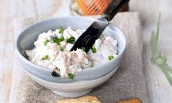

Pasta de salmão
Uma deliciosa pasta de salmão
| 6 convidados 10m Entrada Dificuldade baixa | |
|---|---|
| Ingredientes para fazer Pasta de salmão | |
|
|
Passos para fazer Pasta de salmão
1 - Num robot de cozinha, coloque o peixe cozido, o salmão fumado, a chalota e o alho descascados, as alcaparras, o cebolinho (reserve um pouco) e a salsa picados.
2 - Regue com sumo de limão e polvilhe com a raspa. Adicione o queijo e tempere com o sal e pimenta.
3 - Triture até obter uma pasta homogénea. Coloque em frascos e deixe repousar no frigorífico. Antes de servir polvilhe com pimenta e cebolinho picado.